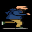

🎮 AYUDA A VÍCTOR
(GRAFITO vs GRAFENO)
Responde bien para que Víctor
avance 5 casillas. ¡3 fallos y pierde!
▶ EMPEZAR
🏁 VICTOR GANA
↻ REINICIAR
⚡ AYUDA A VÍCTOR ⚡
0
FALLOS /3
🔍 CARGANDO PREGUNTA...

🏁
▼ casilla actual